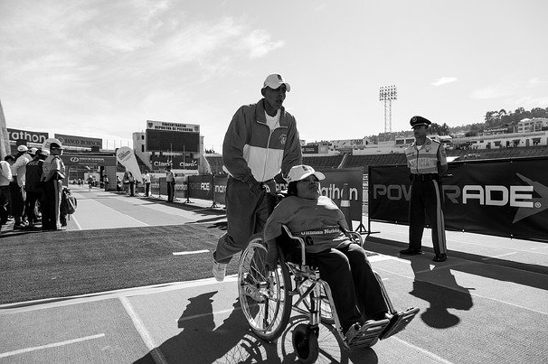

accessibilité pour tous
L’accessibilité web permet à n’importe quel utilisateur de pouvoir utiliser internet de manière égalitaire.
«Des personnes en situation de handicap vous n’en croisez jamais ? Et pourtant, l’OMS en a recensé plus d’1 milliard…»
«253 millions de personnes seraient touchées par une forme de déficience visuelle soit 17% de la population mondiale.
466 millions de personnes ont une déficience auditive handicapante soit 6% de la population mondiale.
200 millions de personnes environ ont un handicap intellectuel soit 2,6% de la population mondiale.
75 millions de personnes auraient besoin d’un fauteuil roulant au quotidien soit 1% de la population mondiale».
src https://webzine.okeenea.com/chiffres-handicap-monde-2019
